Consider a dataset consisting of 1000 samples in a 20-dimensional space. You apply Kernel PCA with a polynomial kernel of degree 3 to reduce the dimensionality of the data. Which of the following statements regarding Kernel PCA is true?
Kernel PCA always results in a lower-dimensional representation of the datacompared to standard PCA.
Kernel PCA can only be applied to datasets that are linearly separable.
Choosing a higher degree polynomial kernel in Kernel PCA can lead toincreased flexibility in capturing non-linear relationships.
None of these.
Comprehension passage - the questions below it refer to this
Based on the above data, answer the given subquestions.
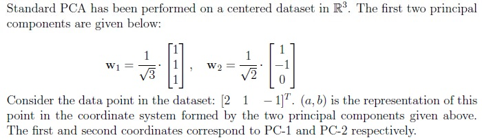
Q5SA4 marks
What is the value of a? Enter your answer correctly to three decimal places.
Q6SA4 marks
What is the value of b? Enter your answer correctly to two decimal places.
Comprehension passage - the questions below it refer to this
Consider the data points shown in the following image:
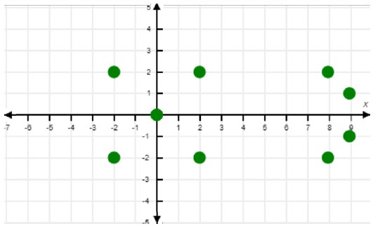
Consider the data points shown in the following image: Based on the above data, answer the given subquestions.
Q7MCQ4 marks
Perform K-means clustering with K = 2 and initial cluster centers at (0, 0) and (6, 0). What are the final means of clusters after convergence?
(2, 0) and (8, 0)
(2, 0) and (8.5, 0)
(0, 0) and (8, 0)
(0, 0) and (8.5, 0)
None of these
Q8SA4 marks
After introducing a new data point (7, 0) , the cluster centers were updated. Enter the sum of the updated x-coordinates for both cluster centers accurately, rounding your answer to two decimal places.
Comprehension passage - the questions below it refer to this
Based on the above data, answer the given subquestions.
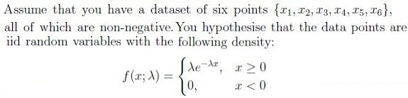
Q9MCQ2 marks
What is the log-likelihood of this dataset under this distribution? ln represents the natural logarithm or loge.
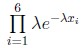
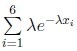
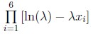
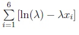
Q10SA2 marks
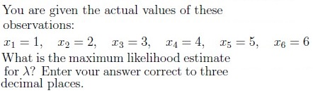
Q11MSQ5 marksselect all that apply
Consider Lloyd’s algorithm used for k-means clustering and choose the correct statements:
K-means algorithm may get stuck at local minima.
It guarantees finding the optimal clustering (global minimum) in every run.
In practice, k should be as large as possible.
If the resources are limited and the data set is huge, it will be good to prefer K-means over K-means++.
Q12MSQ5 marksselect all that apply
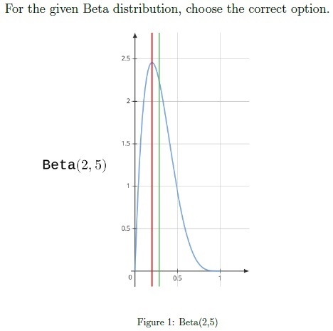
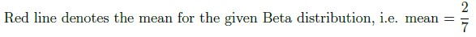
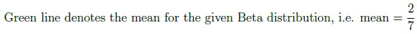
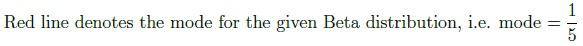
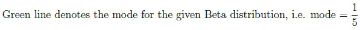
Q13SA4 marks
Consider a dataset with 100 total data points. Each data point is classified as either type A or type B. We model this using a Bernoulli distribution, where p is the probability of a data point being type A. If the maximum likelihood estimate (MLE) of p based on the dataset is 0.4, how many data points of type B are there in this dataset?